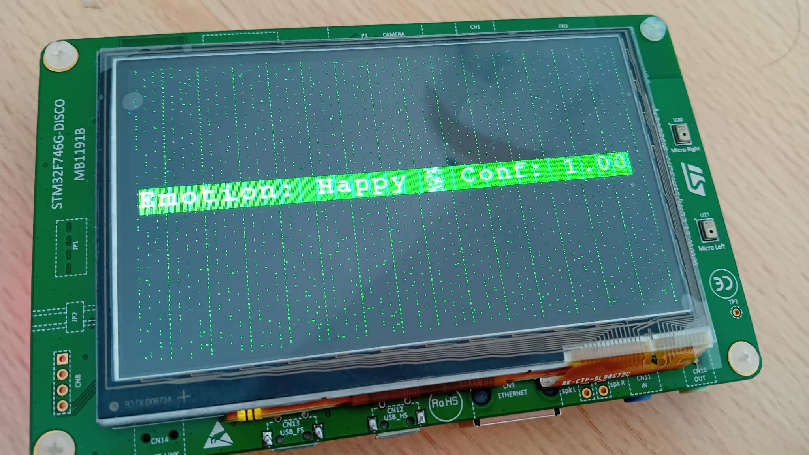
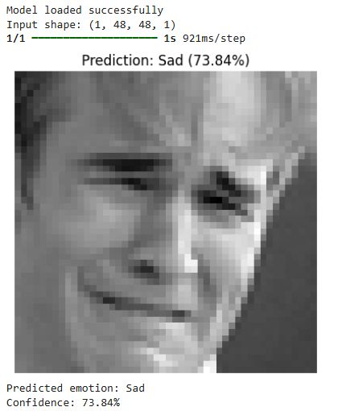
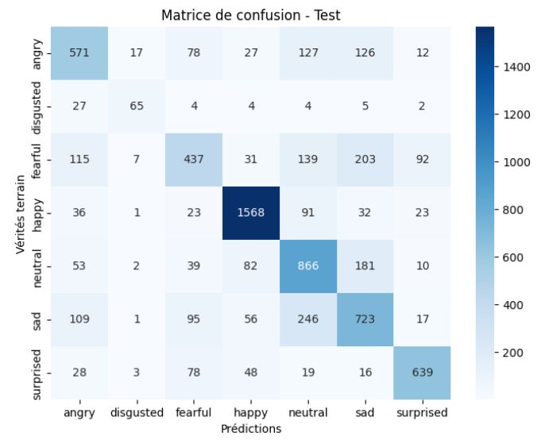

Détection d’émotions faciales par IA embarquée

Objectif
Concevoir et déployer un système d’intelligence artificielle embarquée capable de reconnaître des émotions faciales à partir d’images, en respectant les contraintes de calcul et de mémoire d’un microcontrôleur STM32.
Le projet vise des applications en interaction homme–machine, systèmes intelligents et IA embarquée.
Dataset utilisé
- FER (Facial Expression Recognition)
- Images en niveaux de gris – 48×48 px
- 7 classes d’émotions : angry, disgusted, fearful, happy, neutral, sad, surprised
- 28 709 images pour l’entraînement
- 7 178 images pour le test
Étapes réalisées
- Prétraitement des images (normalisation, redimensionnement)
- Entraînement d’un CNN avec TensorFlow/Keras
- Évaluation du modèle (accuracy, matrice de confusion)
- Conversion des images de test en tableaux C
- Intégration avec STM32Cube.AI
- Déploiement sur STM32F746G-DISCO
- Tests d’inférence avec images statiques
- Affichage des résultats via UART (PuTTY), puis sur écran LCD
Technologies & outils
- Python, TensorFlow/Keras, OpenCV
- STM32CubeMX, STM32CubeIDE, X-CUBE-AI
- STM32F746G-DISCO
- UART (PuTTY), écran LCD embarqué
Résultats obtenus
- Accuracy globale : ~68 % sur l’ensemble de test
- Inférence correcte sur microcontrôleur malgré ressources limitées
- Prédiction fiable des émotions dominantes
- Affichage fonctionnel sur UART et écran LCD
- Validation complète du pipeline IA → embarqué
▶️ Exemple de prédiction (Google Colab)

📊 Matrice de confusion – Ensemble de test

← Retour aux projets